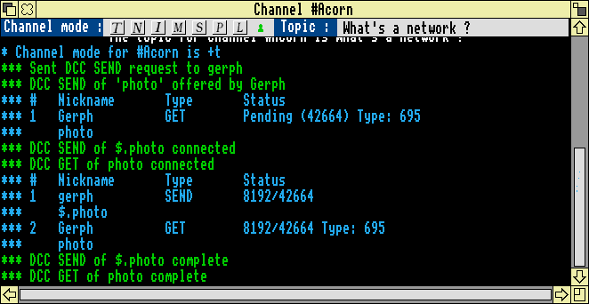
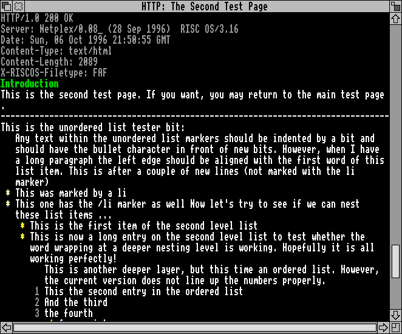
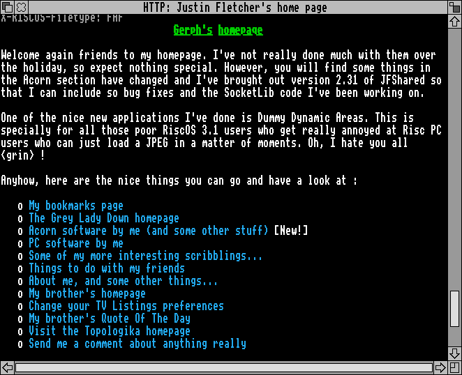
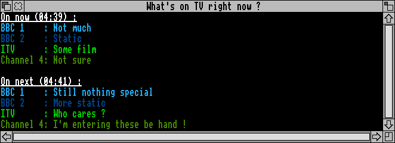

Magrathea modules
Each of the following sections describes a seperate module in Magrathea, each
of which can have most of it's features configured. I've got other things which I really ought to be doing than writing Magrathea, a minor one of which is studying for a degree so please don't be too hard on me for not finishing or implementing all the features you'd like.
Please note, though that I did all these things without a net connection
as I'm a poor impoverished student. Therefore, I hope you'll excuse the OnTV
window as I had to enter it by hand with no delete in a Chat window...
Author: Justin Fletcher
Version: v1.02 (10 Sep 1996)
Synopsis: Provides simple interface to DCC operations, including listing connections, closing them and managing the list
Description:
DCC is a wonderful new means of chatting to people without all that tedious
mucking about with IRC. Well, actually it's not new, but it is better than
querying people. The main advantage is the fact that you are not restricted
to the having to send messages to a server for redistribution, but instead
they go direct to the client - hence the name Direct Client
Connection.
Author: Justin Fletcher
Version: v1.05 (28 Sep 1996)
Synopsis: Provides facility to DCC Send files to other users
Description:
The DCC Send module deals with all the file transfers using the DCC protocol.
These include the newly decided filetype transfer extension. DCC connections
are initiated by using the command
/dcc send <nick> <filename>, and if a file is being
offered by someone you use /dcc get <dcc number>. The number
of the DCC can be obtained by simply using /dcc list, which will
also give the size of the file transfered, it's total length (if supplied),
and the filetype (if supplied).
Filetype extension to the DCC protocol
As filetypes are a principle part of the Acorn system it has been decided -
in conjunction with the Quadworks group that there should be an extension to
the DCC protocol to support filetype transfer with main file transfer.
This is performed by simply tagging the filetype number in three digit hex
form on to the end of the DCC Send request. As such, the send request
must contain the file length extension (supported by most IRC clients
at present). Therefore a DCC Send request with a filetype will be of the
form :
PRIVMSG <nick> :<1>DCC SEND <file> <ip>
<port> <length> <filetype><1>
This should be compatible with mIRC and ircii, and can be disabled if
problems are found.
In use
In use, DCC is really quite nice. Here's a quick demo of a transfer :

Author: Justin Fletcher
Version: v1.00 (20 Aug 1996)
Synopsis: Provides a simple email database
Description:
This module isn't really worth talking about - please... It simply manages a
database of nicks to real names and email addresses so that the SMTP module
works a bit more nicely. It will be replaced by something a bit nicer in
future, when I have the time and patience.
Author: Justin Fletcher
Version: v1.03 (27 Sep 1996)
Synopsis: Provides flood protection for messages sent to the server
Description:
Because certain servers will kick you automatically if you speak more often
than it's limit (as will certain bots), it is useful to ensure that you will
not say things too quickly, either by accident, or by those who wish to
'flood' you from IRC. The FloodProt module will prevent messages leaving the
computer at too high a rate. It is, however, dependant on the protocol used
to connect to the network and the overall network load as to how fast the
messages will be recieved at the server.
Author: John Wright
Version: v1.02 (11 Sep 1996)
Synopsis: Provides a means of seeing news headlines from Press Association
Description:
The press association provide hourly headlines on one of their web pages,
which can be displayed by the use of /headlines.
Author: Justin Fletcher
Version: v1.01 (28 Sep 1996)
Synopsis: Provides a simple help interface within IRClient
Description:
This is basically a clone of the ircii help style which will respond to
/help <command> by displaying information in a seperate
window. The help system is heirarchial, and is quite simple to update.
However, much of the help is not present and will only be updated once we
actually have a useful client.
Author: Justin Fletcher
Version: v1.08 (28 Sep 1996)
Synopsis: Provides a means of reading HTML whilst online
Description:
This began as a simple experiment and has developed into a quite useful
little module. Currently only HTML is supported, though in future it will
support text
files, forms, and give graphical support. I've been called 'stupid' and 'mad'
for this, by two of my best friends, however I feel that this is a useful
addition to IRClient. At present, HTML 1 is almost supported and the major
missing tags are <pre> and the definition tags.
In use
In use the HTTP fetcher is very similar to Lynx, but has colour to liven it
up in places. I've just grabbed the ArcWeb 'secondtest' page as this
demonstrates the use of embedded lists.

The other page I've grabbed is my own since you can quite
easily compare the two and it's the only readily accessible page I have got
with me. To compare, goto
http://users.essex.ac.uk/users/gerph. Remember that you'll have to turn images off if you wish to see it as the HTTP module does.

I must give recognition to Dave Thomas for his excellent
Netplex which was used as the server from which I fetched these images.
Author: Matthew Godbolt
Version: v1.00 (unknown)
Synopsis: Provides Identd support
Description:
Some servers require identification of the users name when a connection is
made, although this is not actually required by the IRC specification. Such
users are usually identified by a tilde (~) character preceeding the user
name. This module provides support for identification so that you are
identified correctly by the server.
Author: Justin Fletcher
Version: v1.00 (13 Aug 1996)
Synopsis: Provides flood protected channel list support
Description:
Certain servers will kick you from them for requesting a /list
because you are receiving too much data in a stream, and could be attempting
to kill the server. On other servers the list information will be the only
thing received from the server, possibly taking a few minutes to be received
in it's entirity. This module will allow you to do things whilst a list is
being received.
Author: Justin Fletcher
Version: v1.04 (28 Sep 1996)
Synopsis: Provides the facility to log channel and chats to files
Description:
Whilst chatting on channels, or personally, you usually find that people tell
you things which by the time you log off you have forgotten. To help
alleviate the problems, this module will log all channel or personal chat to
files in the User directory.
Author: Matthew Godbolt
Version: v1.00 (unknown)
Synopsis: Provides the nice IRClient MOTD as supplied by TheMoog's webpage
Description:
This module will display a message about the recent developments in IRClient
as they occur so that you can keep up with things.
Author: Alex Howarth
Version: v0.06 (28 Sep 1996)
Synopsis: Provides notification of users presence on IRC
Description:
Whilst on IRC you usually find that there are people you would like to keep
in touch with and be aware of when they arrive on IRC. This module will check
periodically whether your friends (or enemies) are on IRC. By using
/notify [+|-]<nick> you can add or remove users, and
/notify [*|?] will display those people who are on your list.
Author: Justin Fletcher
Version: v1.01 (02 Sep 1996)
Synopsis: Provides a nice interface to the OnTVNow daemon I've got
Description:
When it is running, the OnTV daemon (cscf1.essex.ac.uk, port 9000 - but
liable to change at short notice) will display what is currently on TV, and
what is due to be on next. Whilst being specific to East Anglia, the listings
should be pretty accurate for most people.
In use
I just happen to have a picture of the TV listings in use, so here it is :

Author: Justin Fletcher
Version: v1.01 (28 Sep 1996)
Synopsis: Provides facility for sound samples to be played on particular event
Description:
Since IRC is a 'fun' medium for communication the Samples module provides
that little bit more fun, by attaching sounds to certain events. This will
eventually be improved to allow user customisation of the samples themselves,
as currently these are fixed.
Author: Justin Fletcher
Version: v1.06 (28 Sep 1996)
Synopsis: Provides a means of sending email whilst online.
Description:
If anybody received an email from me during the summer holiday you would have
been seeing a product of this module. Since I can't for the life of me work
out how Newsbase and related programs should be used from a dialup and I
didn't really have the time, I wrote this module so that I could send email
in a similar way to that which the ircii 'lice' scripts do. Whilst not being
the best solution to the problem, it does allow me to quickly throw an email
at somebody I've just missed on IRC, or throw emails at myself to remind me
of things.
This page is maintained by Justin Fletcher (Gerph@essex.ac.uk).
Last modified on 6th October 1996.